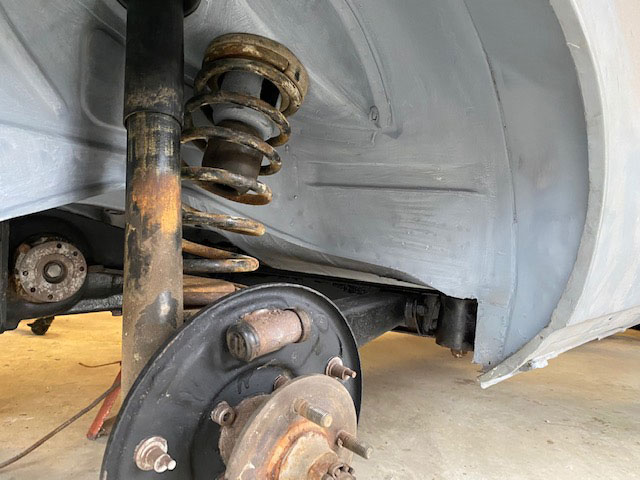

Fall 2021: Mount Rear Subframe
After a year of undercarriage restoration it was time to clean up the rear subframe and suspension and remount it.
The first step is to get the car off the rotisserie by doing the reverse of when it was placed on the rotisserie 5 years prior.
This is where documentation is vital. See March 2016 Engine and Suspension Removal.
{kind=link}
This is a tough procedure. Once the rotisserie is removed, all the weight of the rear of the car can only be supported on two jack stands on the rocker half-moon metal discs jack points (used for roadside tire changes with car jack).
One false move and 800 - 1000 pounds of Karmann Karosserie would come crashing down possibly on me, and at a minimum would most likely destroy the spare tire well and other body sheet metal. I created a secondary safety measure with a massive 4 x 4 brace on jack stands that would balance on the rocker edge in the event of catastrophic slippage.
With everything in place, I used my engine hoist to lift the 150 - 200 pound rear suspension and differential combo high enough to precariously balance on the floor jack. I rolled it carefully under the car.

Once in position, I slowly pumped the floor jack. As it slowly ascended, the eyelets for the main suspension support brace threaded themselves back into the heavy body mounting pegs. I quickly secured them with the heavy nuts. Next I ran the heavy 19mm bolt through the differential eyelet into the body threaded brace. Done. Success.
With the suspension firmly attached to the body, I could rest the weight of the car on the suspension and take a big sigh of relief. I actually rolled over on my back on the garage floor and just smiled up at the ceiling.
The next step is to compress the springs and lift the swing arms with the wheel hubs so that the threaded shock absorber tips would slide through the eyelet in the shock tower. This is an art of trial and error, mixed with more spring compression and pumping the floor jack to push the threaded tips through the shock tower holes. Apply the washer and nut and that part is done.
The final stage is to reinstall the stability straps that run from the heavy peg mounting points to the body. These serve to limit the amount of rotation for the rear suspension.
{kind=link}